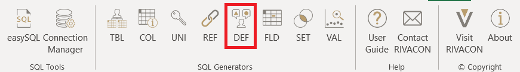

DEF
The DEF generator generates a SQL query which detects changes in definitions of numeric and non-numeric objects when executed.
It may be used directly as a worksheet function =DEF().
Rather than doing this, we suggest using the DEF dialog from the menu bar, especially when using this function for the first time.

Figure 1: location of the DEF ribbon
Example
Consider the database of a retailer with two entities: customers2020 and customers2021.
An attribute of each purchase is the type of membership the customer chose.
In this example, we have two tables containing the customer's settings for different years.
We see, that customers 1 and 2 changed their subscriptions.
To identify such changes in large databases, we can use DEF.
| Table 1: customers2020 | Table 2: customers2021 |
We may search for changed object definitions in an entire table or a defined subset thereof.
For instance, in the above example, we may only care about customer IDs 2 and below.
The framework can account for that via the scope parameter and limit the search for violations to that scope.
As a result, only the reference to the customer with ID = 1 and ID = 2 would be reported, as shown below:
Table 3: executed DEF
Settings
The DEF generator has eleven input parameters, five related to the source (the outdated table), five to the target (the updated table), and one to the attribute, which will be shown in the resulting table. The source and target are each defined via two parameters:
- the
source schema/target schema(providing for databases where identically named tables may exist in different schemas) - the
source table/target table
The third parameter specifies the common key in both tables to be able to link the entries:
- the
source link key/target link keydefines the key used to link the tables together. When either key is a compound key, the attributes it is composed of are specified as a comma-separated list.
The fourth parameter sets the attribute, that will be checked for changed definitions:
- the
source object/target objectdefines the attribute, in which changes will be detected
The fifth parameter defines the scope, i.e. the subset of the source / target tables to be included in the check:
- the
source scope/target scopedefines the subset of the respective table to be included in the check
The scope is specified in the syntax of an SQL where clause.
It is an optional parameter.
When left blank, the scope is the entire table.
The final parameter lets us input the attribute, which will be shown in the resulting table.
In the above example, this parameter is set to name as we have been interested in the name of the customers, who changed their subscription.
- the
target attributedefines the attribute, that will be shown in the output
In the below screenshot, we illustrate how the parameters would be chosen to implement the example check described above.
We assume, that the data is stored in an Excel workbook "Test_Data.xlsx" with the outdated list of customers stored in the worksheet Customers2020 and the updated list stored in a second worksheet named Customers2021.
Figure 2: DEF settings